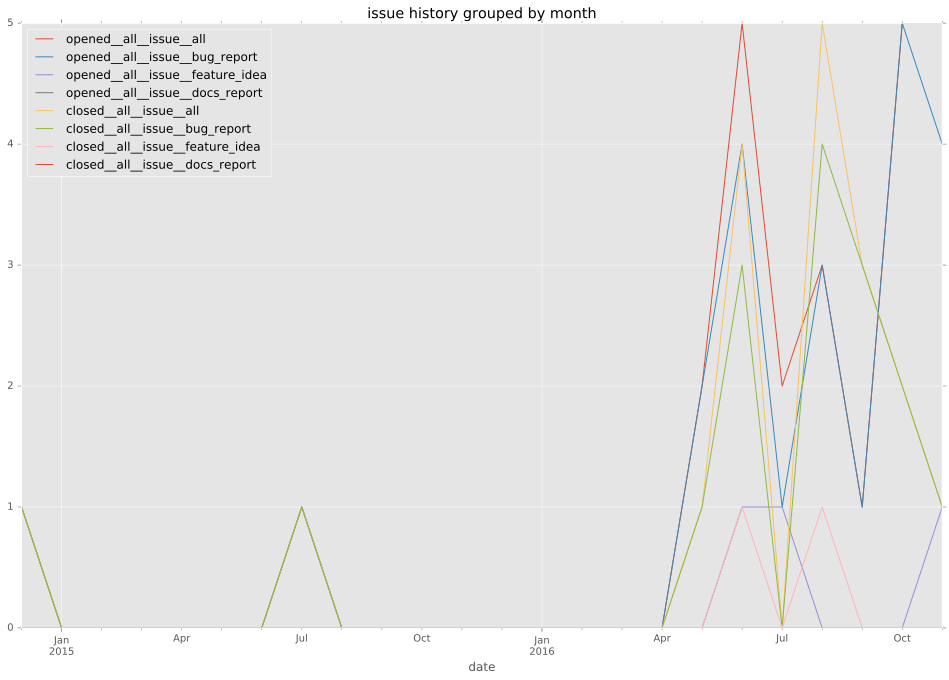
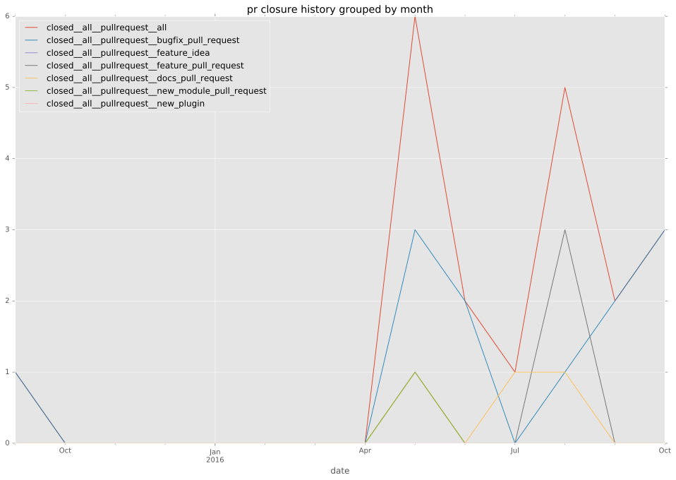

authors
- chouseknecht
maintainers
- ansible
contributors
- stefanha : 5 commits
- listx : 1 commits
- gundalow : 1 commits
- sivel : 2 commits
- shaung : 3 commits
- containscafeine : 1 commits
- chouseknecht : 160 commits
total issue counts
feature pull request: 3
pullrequest: 24
docs pull request: 1
bugfix pull request: 17
feature idea: 2
issue: 20
new plugin: 3
bug report: 18
issue history

pullrequest history

days open by issue type
bugfix pull request
count: 32
std: 18.1714227522
min: 0
max: 103
median: 0.0
mean: 3.84375
all
count: 60
std: 15.5219545627
min: 0
max: 103
median: 0.0
mean: 5.13333333333
pullrequest
count: 0
std: nan
min: nan
max: nan
median: nan
mean: nan
docs pull request
count: 2
std: 0.0
min: 0
max: 0
median: 0.0
mean: 0.0
feature pull request
count: 4
std: 0.0
min: 0
max: 0
median: 0.0
mean: 0.0
feature idea
count: 1
std: nan
min: 7
max: 7
median: 7.0
mean: 7.0
issue
count: 0
std: nan
min: nan
max: nan
median: nan
mean: nan
new plugin
count: 4
std: 0.5
min: 0
max: 1
median: 1.0
mean: 0.75
bug report
count: 17
std: 14.2160327882
min: 0
max: 40
median: 3.0
mean: 10.2941176471
closures grouped by total days open